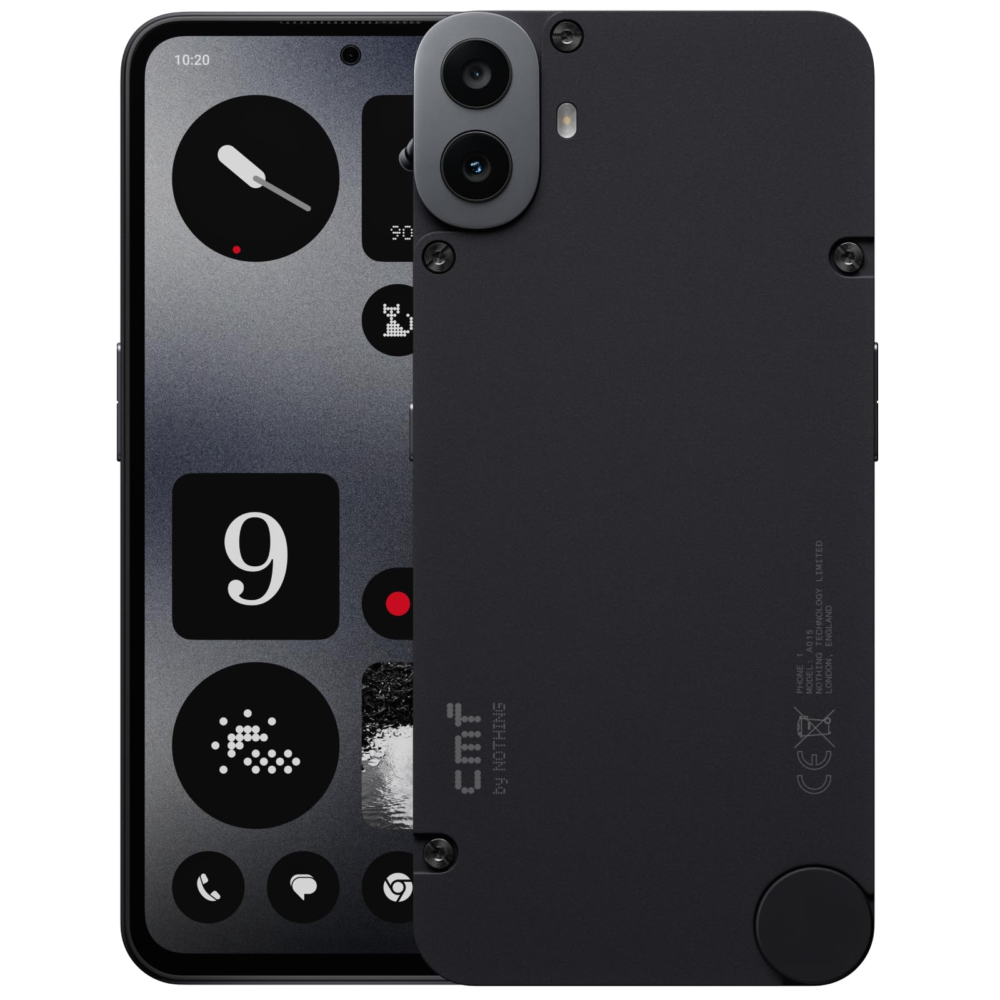

Nothing CMF Phone 1 board
{kind=link}

Overview
Nothing’s CMF Phone 1 (codenamed tetris) [1] is based on the MediaTek Dimensity 7300 SoC.
uniLoader can be used on Tetris instead of the Linux Kernel. Because Tetris’s version of ATF requires some setup to get UFS working when booting as lk, while it may be possible to make it work, currently, uniLoader-as-lk configurations are unsupported.
Building uniLoader
Build uniLoader as always:
# place your binaries in blob/*
export CROSS_COMPILE=<toolchain prefix>
export ARCH=aarch64
make tetris_defconfig
make
The output file is uniLoader.lz4.
Flashing Overview
Note
In case the board is bricked for some reason, the Nothing Flash Tool (MS-Windows only) [2] can be used to unbrick and revive it. This tool reflashes all partitions on the device, so make sure you have backed your data up.
Flashing uniLoader
After making the Android bootimg, the binary can simply be flashed to the device.
There’s no need to play with devicetrees, because they are stored in vendor_boot.
Create the boot.img:
mkbootimg --kernel uniLoader.lz4 --ramdisk <requires one, else won't boot> --header_version 4 --out boot.img
Reboot the device to Fastboot Mode (VOL+, then select FASTBOOT MODE in the menu), and then:
fastboot flash boot boot.img reboot
uniLoader should start, and then it should start your kernel.
Notes and issues
This device does NOT support simple-framebuffer. You will not see logs on the display.
This device has a watchdog, which you can enable or disable by manipulating CONFIG_NOTHING_TETRIS_DISABLE_WATCHDOG.